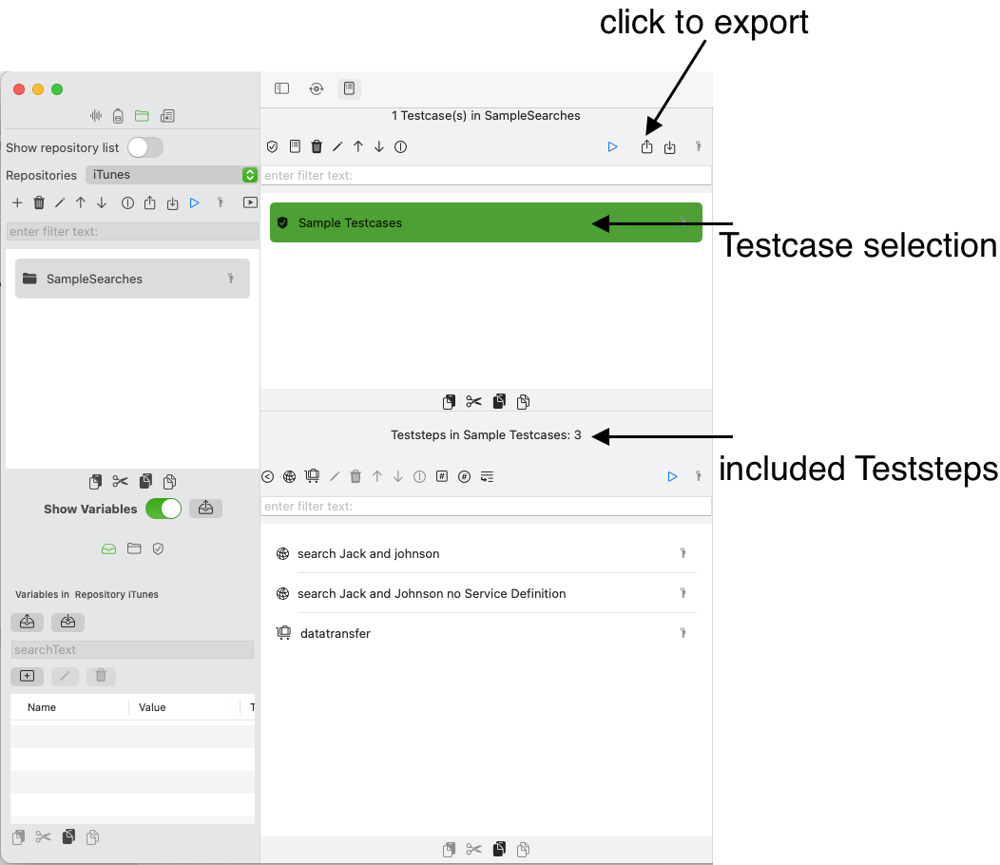
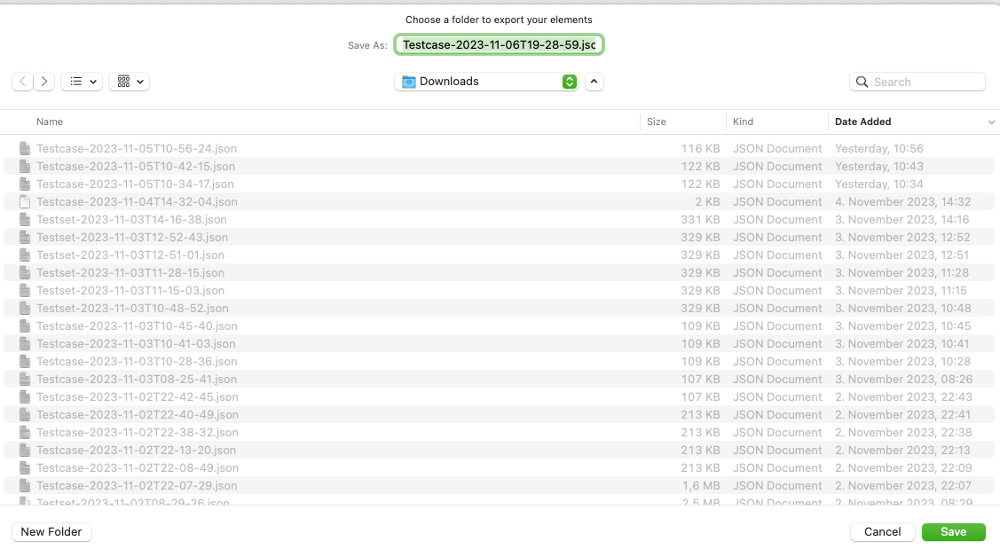
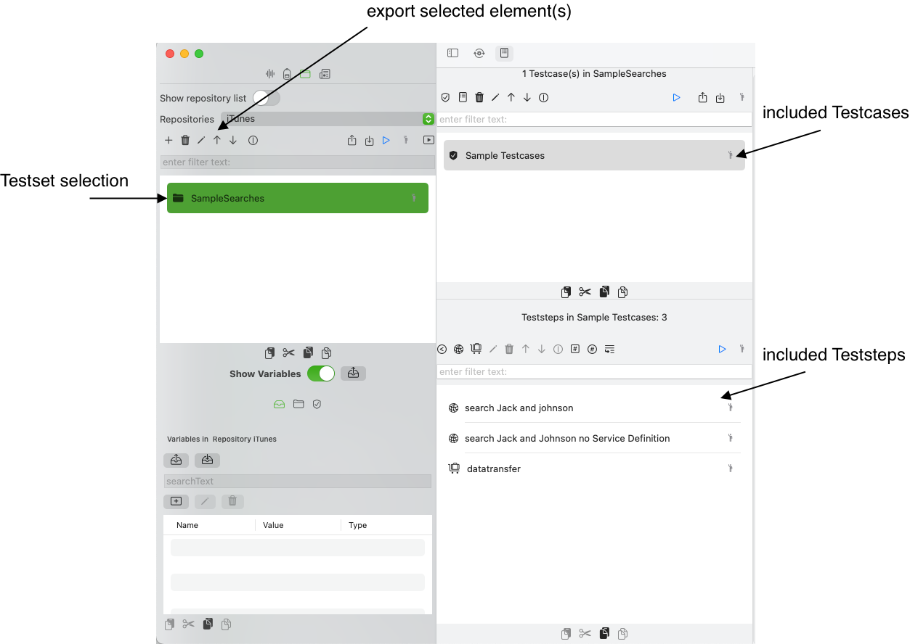
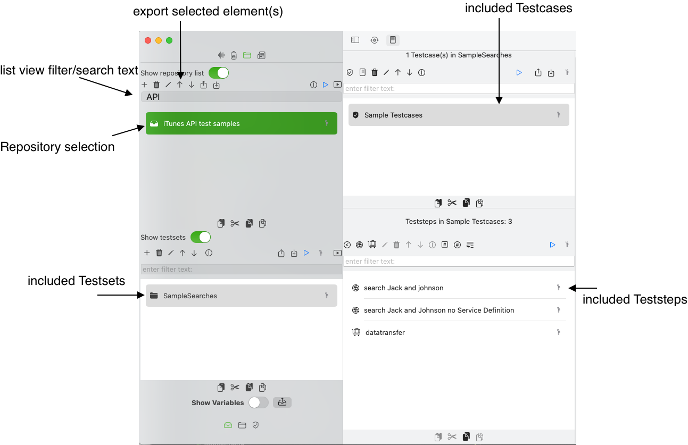
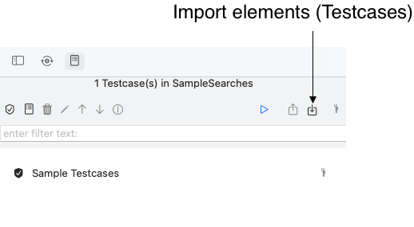
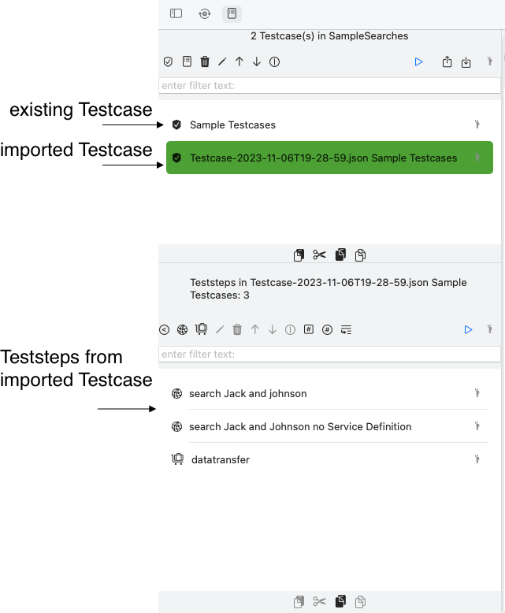
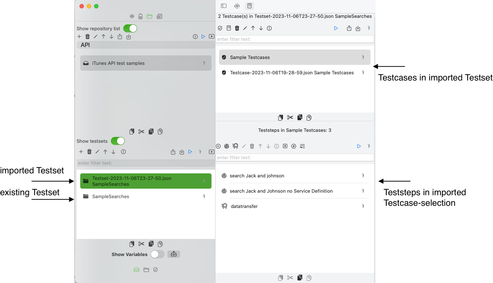
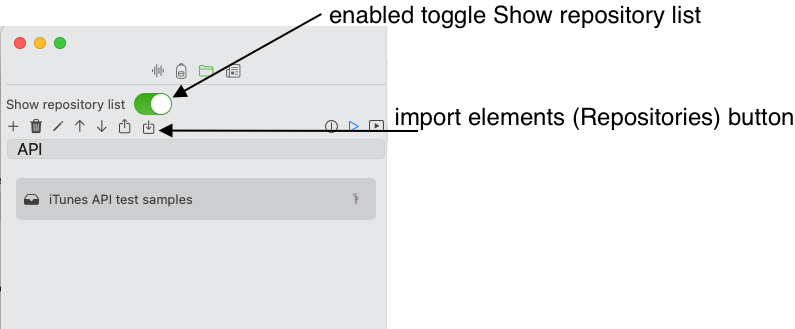
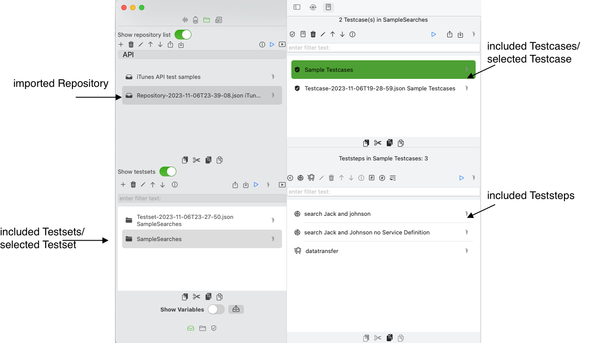

Import and export your test definitions
APIJockey Test helps you define and run your tests. There will be situations where
- you want to share your tests with others or
- want to run tests in APIJockey Test that you created in other solutions
This is where import and export of tests comes in handy. The export and import uses a JSON-structure, which is described below in more detail.
Import and export options
You can import and export
- A selection of Testcases
- A selection of Testsets
- A selection of Repositories
Export a selection of testcases
If you want to export a Testcase selection (one or several Testcases), you need to select these Testcases and press
export selected Testcases.

When you click the button, a save as Dialog appears with a preset filename in the downloads folder.

After you have confirmed with save you will find the JSON-File in the selected folder.
Export a selection of testsets
The Testset list view can be hidden or displayed by enabling/disabling the toggle element, IF the Repository list view is enabled. If you see the dropdown list for your repository selection, this toggle is not visible. If you want to export a Testset selection (one or several Testsets), you need to select these Testsets and press export selected Testsets.

When you click the button, a save as Dialog appears with a preset filename in the downloads folder.
After you have confirmed with Save you will find the JSON-File in the selected folder.
Export a selection of Repositories
If you want to export a Repository selection (on or several Repositories, select these Repositories.

When you click the button, a save as Dialog appears with a preset filename in the downloads folder. This follows the same rules as for testcases and testsets, but uses the termin Repository as the start of the filename.
Import testcases
When you want to import Testcases, you must press the import elements button in the Testcase List View

This button makes no distinction of your current selection and would simple add Testcases to the current Testcase list. When you press the button, an Open Dialog comes up, where you can select any file. A Testcase Decoder will try to read a JSON-structure representing a list of 1 - n Testcases. If this is successful, the Testcase will appear in the list with Testcase names prefixed with the filename that you chose. Assume we had exported the existing Testcase and would import it back, we would get the following list:

Import testsets
When you want to import Testsets, you must press the import elements button in the Testset List View
![screenshot with button import testsets] (storage/ImportTestsets.png)
This import action makes no distinction of your current selection and would simply add Testcases to the current Testcase list. When you press the button, an Open Dialog comes up, where you can select any file. A Testcase Decoder will try to read a JSON-structure representing a list of 1 - n Testcases. If this is successful, the Testsets will appear in the list with Testcase names prefixed by the filename that you chose. Assume we had exported the existing Testcase and would import it back, we would get the following list:

Import repositories
The Repository list view can be displayed as dropdown list or as an editable list view, When you want to import Testsets, you must press the import elements button in the Testset List View

This import action makes no distinction of your current selection and would simply add Repositories to the current Repository list. When you press the button, an Open Dialog comes up, where you can select any file. A Repository Decoder will try to read a JSON-structure representing a list of 1 - n Repositories. If this is successful, the repositories will appear in the list with Repository names prefixed by the filename that you chose. Assume we had exported the existing repository and would import it back, we would get the following list:

Scope of an export and import
The export and import facility will include everything that you can define in the Testdefinition hierarchy
- Variables
- Assertions
- ValueProvider
- ValueTransfers (Link between Variables and ValueProviders
Not included are these elements
- Service definitions
- Run Environments
- Run Executions
This means, if you export an HTTP Teststeps and SOAPTeststeps that have a ServiceDefinitionReference, the one that would import it, MUST first create these ServiceDefinitions. If not the import reacts as follows:
- An HTTP Teststep will be imported, but without ServiceDefinitionReference
- A SOAP Teststep that does not find a ServiceDefinition will lead to an import failure. See Options to import SOAP Teststeps to understand alternatives and prerequisites.
Options to import SOAP Requests/tests
SOAP Requests can be included in HTTP Teststeps and SOAP Teststeps. The basic difference is three degree of support in the test definition
- HTTP Teststeps do not support schema validation
- HTTP Teststeps have no reference to a WSDL
- SOAP Teststeps require this reference and can therefore perform a schema validation
- SOAP Teststeps allow you to define XPath-based validations, which is not available for HTTP Teststeps
When you import a SOAP Request/Test you will need to decide which Teststep you want to create in APIJockey Test, as the Teststep Decoder identifies the type of Teststeps and creates a new instance of this exact type.
With these, you may create a custom import or export script to any other third party application. For some of these we provide you sample scripts, for your convenience and without any warrenty or liability.
Possible error situations
When you import a JSON that does not conform to the exected input, like:
- You try to import testcases in the testset or repository list or vice versa
- You try to import any JSON structure that does not represent the expected structure
the import will fail, and eventually report the missing JSON key.
When you try to import a SOAP Teststeps, the decoder will try to find the referenced WSDL / Binding / SOAP operation in these keys:
- serviceDefinition, this key must contain a URL that returns the WSDL. This WSDL must be present as WSDL Service Definition Content
- wsdlServiceBindingQName, this key value must contain a QName with the target namespace of the service definition and the Binding name.
- soapoperationQName, this key value must must contain a QName with the target namespace of the service definition and the soap operation name.
Sample scripts to export from third party applications
You can download a sample groovy script to export SOAP Teststeps to the supported imported/exported JSON-format.
This script is provided under the MIT License (see opensource.org), please make sure you understand and accept this license, before you use the script. Steps to use this script
- You create a groovy script as a teststep in SoapUI or ReadyAPI, and copy the provided groovy script
- Modification details are provided within the script.
- Please understand, this script is made with best intentions to support collaboration, but changes may occur in these third party applications that we are not aware of, you use this script at your own risk.